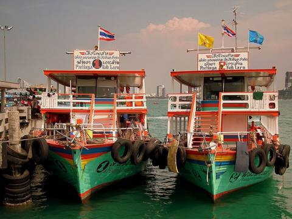
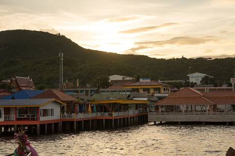

Остров Ко Лан (Koh Larn)
Остров с чистыми пляжами (Tawaen, Samae, Tien). Паром от пирса Bali Hai, машину оставляем на платной парковке у пирса. С ребёнком — только большой паром, не спидбот.


Подробнее: что смотреть, цены, нюансы
👀 Куда идти и что хвалят. Пляж Самэ — лучший с малышом: зоны купания за буйками, удобный вход в воду. Тавэн удобнее, но там толпа и гидроциклы; Тиен — только в прилив.
👶 С малышом. Свой детский жилет — на пароме детских обычно нет. Лежак ≈ 100 бат (часто бесплатно при заказе еды в кафе).
💰 Цены и часы. Паром 40 бат, ≈ 45 мин, билеты только в кассе на пирсе. Паттайя → На Бан ≈ 7:00, 10:00, 12:00…; обратно последний ≈ 18:00 из На Бана, ≈ 17:00 из Тавэна. По острову сонгтэо ≈ 30 бат/чел.
⚠ Нюансы. Ехать в будни первым паромом; после обеда на Самэ бывают волны. Нужны наличные: банкомат берёт ≈ 220 бат комиссии.
🍽 кафе прямо на пляже Samae (лежаки + еда), у пирса Bali Hai — Bali Hai Sunset · все кафе